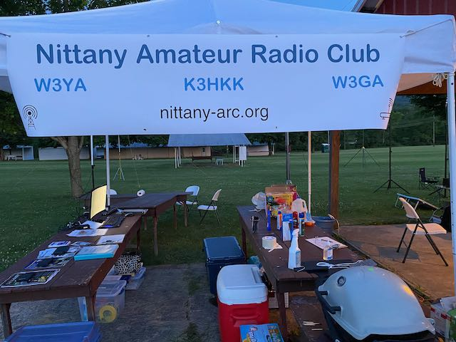
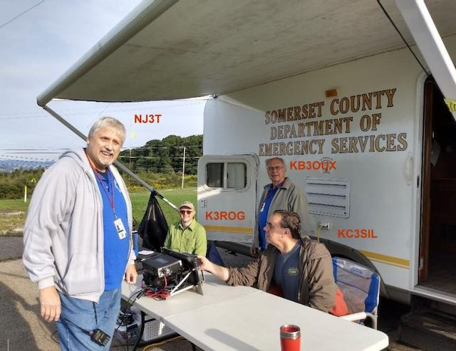

6 Engagement
Amateur radio has so many ways to be “radio-active”. Here are some of the ways I enjoy engaging in our amazing hobby.
6.1 Organizations
6.1.1 American Radio Relay League (ARRL)
I am an active member of the ARRL.
6.1.2 Amateur Radio Emergency Service (ARES)
I participate in the weekly ARES net on the W3YA 146.85 repeater as a participating station and as a net control station.
In addition, I enjoy providing communications for various special events via the ARES organization.
6.1.3 Nittany Amateur Radio Club (NARC)
I have been a member of NARC since 2016. I help maintain the club’s station on top of Pine Grove Mountain, and I have served on the Board of Directors since 2020.
6.1.4 Penn State Amateur Radio Club (PSARC)
6.1.5 Quarter Century Wireless Association (QCWA)
Our local QCQA Chapter 203 has a weekly net on Sunday nights at 8:30 PM local time on the W3YA 146.85 MHz repeater. I am one of the net control stations.
6.2 Other activities
6.2.1 Automatic Packet Reporting System (APRS)
I operate a receive-only VHF (144.390 MHz) I-Gate under the callsign W3TM-11.
6.2.2 Volunteer Examiner
I am a registered Volunteer Examiner (VE) for W5YI and for the ARRL.
6.3 Events
6.3.1 Field Day
For the last several years, I have helped organize the NARC Field Day operation.

In the summer of 2020, during the height of COVID-19 pandemic restrictions, I operated from my backyard.
6.3.2 Winter Field Day
6.3.3 Jamboree on the Air (JOTA)
6.3.4 Birthplace of Memorial Day W3M
6.3.5 Flight 93 20th Anniversary N3M
Several hams from NARC cooperated with hams from the Somerset County Amateur Radio club to commemorate the 20th anniversary of Flight 93 from a location near the memorial.
